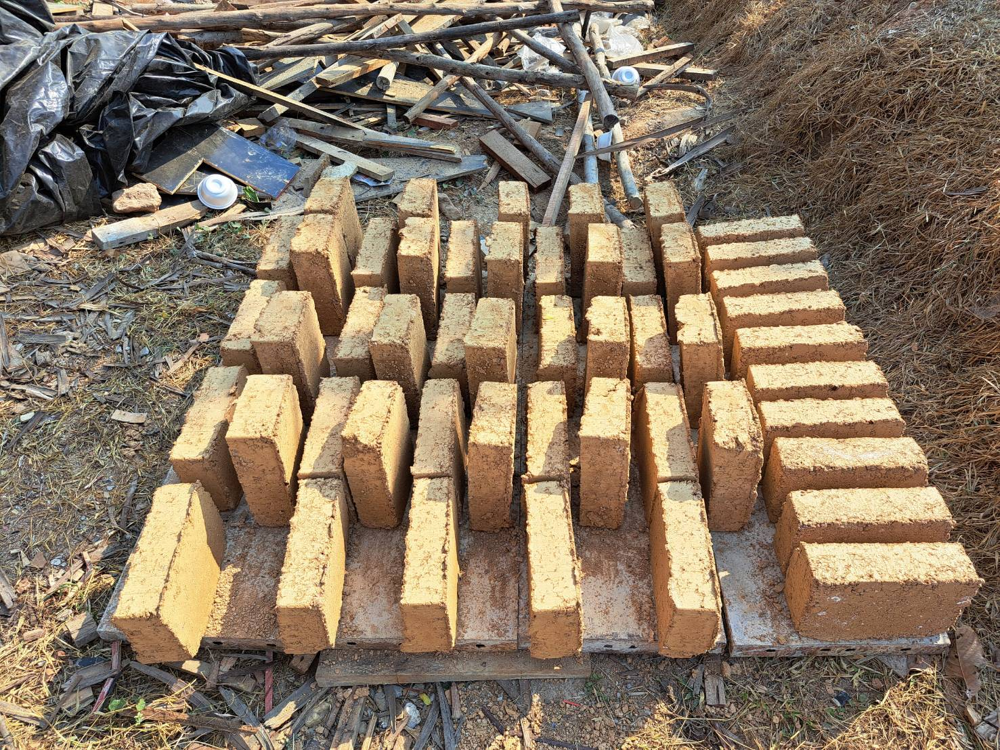
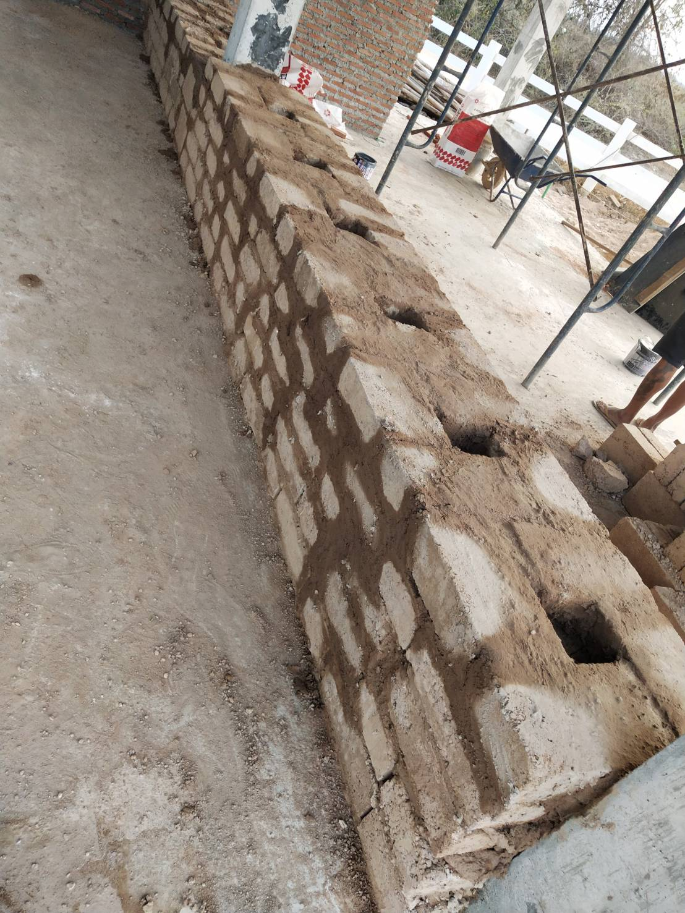
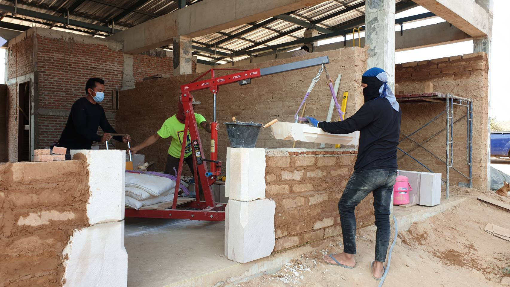
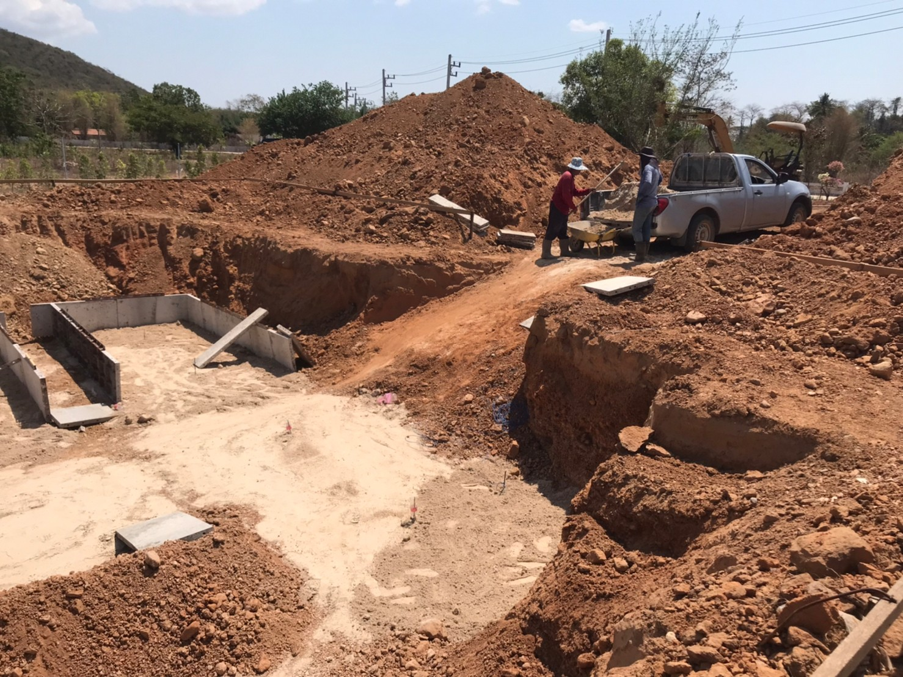

การก่อสร้างกำแพงดิน — โครงการเนเชอรัล เฮลท์ตี้ วิลเลจ
Natural Healthy Village produces its own earth blocks from on-site soil and limestone — cool, breathable walls without air conditioning, using techniques learned at Baan Din and refined with a custom hydraulic press.
Earth blocks are made from a mixture of earth, sand, natural fibre, and cement combined with water and air-cured until hard.
At the Baan Din Sufficiency Economy Learning Center, blocks are made by mixing all materials in a small pond, then filling moulds by hand. At Natural Healthy Village we developed our own process: site earth mixed with white limestone and water in a plaster mixer, poured into moulds, then hydraulically pressed to remove excess water and compact the block. Blocks are air-cured for several days before use.

Thermal inertia: Earth block walls accumulate heat or cold and maintain a stable temperature year-round. In Thailand, houses built this way stay naturally cool without air conditioning.
Breathable walls: Limestone in the blocks and in wall plastering allows walls to breathe and release humidity under the sun. Evaporation of moisture lowers the surface temperature.
Living material: Earth is a living material — unlike concrete, which is inert. Walls built from earth harmonise with the natural soil of the site. The life force of the land is preserved rather than disrupted by concrete and metal alone.
In ancient times, earth walls used straw fibre reinforcement and timber structure — and lasted hundreds of years.
At NHVK we combine the best of both worlds: a concrete structural shell (slabs, columns, and beams) with earth blocks for wall infill. Walls up to 60 cm thick provide high thermal inertia and strength.


For a single-storey house, earth block construction is cheaper than a typical Qcon (lightweight concrete block) house.
For two storeys, the structure must be reinforced due to the greater weight of earth blocks — expect roughly 20% higher structural cost.
Earth block building takes longer than conventional construction and requires a trained workforce. Plot owners at NHVK can request help from the Baan Din learning center for earth-block house construction.
When excavating soil for foundations, we keep and process that earth for block production — using as little external material as possible.

In the entrance building at NHVK, one room has 60 cm walls and another 30 cm walls. The 60 cm room is consistently 2°C cooler than the 30 cm room. In practice, 30 cm is sufficient for self-sufficient comfort; 60 cm is a luxury option.
For people sensitive to nature, staying in an earth-block room is a remarkable experience — within a few days the body re-aligns with the environment in harmony with the site.
See available residential plots at Natural Healthy Village Kaengkrachan.
View Available Plots